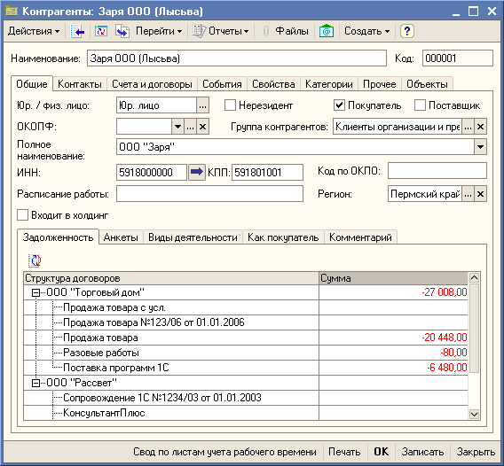
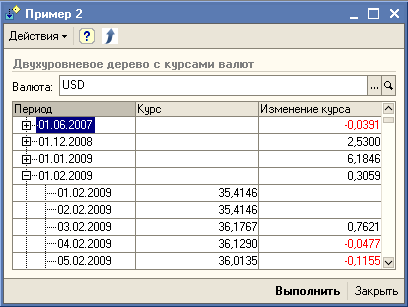
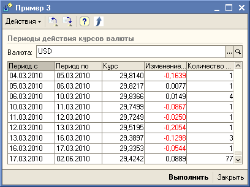
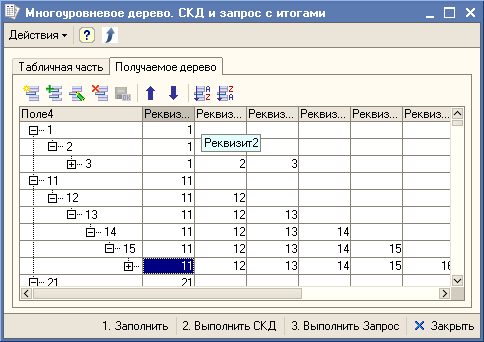
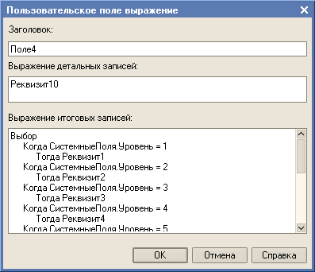

Про циклы в одну строку
Первым номером нашей программы выступает код добавления (копирования) строк из одной таблицы значений в другую ТЗ или из одной табличной части в другую ТЧ. Ну, и т.д. Т.е. строки из обоих источников объединяются, совпадающие по имени колонки заполняются.
Для каждого СтрокаТЗ Из Таблица1 Цикл ЗаполнитьЗначенияСвойств(Таблица2.Добавить(), СтрокаТЗ) КонецЦикла;
Соответственно код добавления элементов из массива в массив будет такой.
Для каждого ЭлементМассива Из Массив1 Цикл Массив2.Добавить(ЭлементМассива) КонецЦикла;
Всего одна команда в цикле - что может быть проще?
Наверное, вы уже обратили внимание на запись циклов в одну строку. Так программный код выполняется несколько быстрее. Всё дело в том, что в строках есть дополнительные данные, которые используются, например, при отладке. Меньше строк - меньше дополнительных данных. Это прекрасно видно, если смотреть замер производительности в режиме отладки - цикл в строке Для из 10000 повторов записанный обычной структурой будет выполнен 10001 раз, а записанный в 1 строку будет выполнен 1 раз. Разумеется, что при этом результат выполнения программного кода будет абсолютно одинаковый, а вот время выполнения будет разное. Не верится? Смотрим "Пример 1".
Скачать Пример 1...
Следует заметить, что править такую форму записи очень сложно. Поэтому, если команды отрабатываются 1 раз, то нет особого смысла записывать их в 1 строку друг за другом.
Также "тонким" моментом будет использование команды ОбработкаПрерыванияПользователя(). Если в цикле, записанном в 1 строку, используется данная команда, то вероятность срабатывания прерывания выполнения программы по Ctrl+Break становится не четким. Ну, может за исключением тех случаев, когда в цикле кроме этой других команд нет.
Хочу сразу обратить ваше внимание на комментарии awa к этой статье. Всё сразу станет понятнее.
Обработку для сворачивания программного кода в 1 строку можно скачать здесь.
Теперь посмотрим что-нибудь простенькое. Например, разбор строки с разделителями в массив элементов. В типовых конфигурациях есть функция РазложитьСтрокуВМассивПодстрок(). Предлагаю рассмотреть альтернативное решение. Вот код для строковых значений.
// РазбираемаяСтрока - строка исходного текста
// Разделитель - разделитель элементов строки
ЗначениеИзСтрокиВнутр("{""#"",51e7a0d2-530b-11d4-b98a-008048da3034,{0,{""S"",""" + СтрЗаменить(СтрЗаменить(РазбираемаяСтрока,"""", """"""), Разделитель, """},{""S"",""") + """}}}");
Вот код для числовых значений.
ЗначениеИзСтрокиВнутр("{""#"",51e7a0d2-530b-11d4-b98a-008048da3034,{0,{""N""," + СтрЗаменить(РазбираемаяСтрока, Разделитель, "},{""N"",") + "}}}");
Посмотреть, как это работает можно здесь, здесь и здесь.
В (150) комментарии к статье было высказано предположение, что данный метод не эффективен, поэтому был добавлен "Пример 7". Действительно, на коротких строках предложенное в (150) комментарии решение с разбором строки эффективнее, но сложнее в исполнении. Ещё более эффективное решение и ещё более сложное в исполнении читаем ниже...
Скачать Пример 7...
Так, так, так. А вот довольно шустренький программный код для сворачивания элементов массива. Результат записывается в НовыйМассив.
НовыйМассив = Новый Массив; Соответствие = Новый Соответствие;
Для каждого ЭлементМассива Из Массив Цикл Соответствие.Вставить(ЭлементМассива) КонецЦикла;
Для каждого КлючИЗначение Из Соответствие Цикл НовыйМассив.Добавить(КлючИЗначение.Ключ) КонецЦикла;
Для сравнения в "Пример 4" приведено 4 варианта реализации сворачивания массива: через массив, через таблицу значений, через соответствие и вариант, реализованный в типовых конфигурациях 1С. Поэкспериментируйте и выберите тот, что вам больше понравится.
Скачать Пример 4...
Если вдруг понадобится отсортировать элементы в массиве, то быстро это можно сделать так:
СписокЗначений = Новый СписокЗначений;
СписокЗначений.ЗагрузитьЗначения(Массив);
СписокЗначений.СортироватьПоЗначению();
Массив = СписокЗначений.ВыгрузитьЗначения();
В некоторых случаях больше подойдет сортировка не по значению, а по представлению.
Получить строку из пробелов нужной длины можно собирая пробелы в цикле. Но можно использовать следующую конструкцию:
// Получаем строку пробелов длиной 10000 символов
СтрокаПробелов = СтрЗаменить(Формат(0, "ЧЦ=100; ЧН=; ЧВН=; ЧГ="), "0",
СтрЗаменить(Формат(0, "ЧЦ=100; ЧН=; ЧВН=; ЧГ="), "0", " "));
Интересное наблюдение при работе со строками большой длины можно сделать в "Пример 5". Использование трехуровневой буферизации может дать ускорение в десятки и даже тысячи раз. Код может выглядеть так:
Данные = "";
Результат = "";
Результат1 = "";
Результат2 = "";
// Получаем Данные и записываем в Результат
Пока ПолучитьДанные(Данные) Цикл
Результат2 = Результат2 + Данные;
Если СтрДлина(Результат2) > 100 Тогда
Результат1 = Результат1 + Результат2;
Результат2 = "";
Если СтрДлина(Результат1) > 10000 Тогда
Результат = Результат + Результат1;
Результат1 = "";
КонецЕсли;
КонецЕсли;
КонецЦикла;
Результат = Результат + Результат1 + Результат2;
Конечно, и здесь цикл можно записать в одну строку, но это не сделано только для сохранения читаемости программного кода в статье.
Скачать Пример 5...
В (302) комментарии к статье приведен интересный код для разбора длинных текстовых строк, позволяющий проводить предварительную обработку данных, например, перед помещением их в массив. Применительно к задаче помещения данных в массив на больших объемах данных он работает конечно медленнее, чем код описанный в разделе Про быстрые массивы, но возможность предварительной обработки данных дорогого стоит. Предлагаю рассмотреть альтернативное решение без использования объекта ТекстовыйДокумент. Оно конечно сложнее в исполнении, но эффективнее в работе и также позволяет добавить предварительную обработку данных, например, перед помещением их в массив.
ДлинаСтроки = СтрДлина(РазбираемаяСтрока);
Если ДлинаСтроки > 1000 Тогда
// Порежем строку на блоки для более эффективного поиска
МассивСтрок = Новый Массив;
Индекс = 1;
Пока Индекс <= ДлинаСтроки Цикл
МассивСтрок.Добавить(Сред(РазбираемаяСтрока, Индекс, 1000));
Индекс = Индекс + 1000;
КонецЦикла;
мИсходныйКод = МассивСтрок[0];
ГраницаКода = МассивСтрок.ВГраница();
Иначе
мИсходныйКод = РазбираемаяСтрока;
ГраницаКода = 0;
КонецЕсли;
мСтрок = Новый Массив;
ИндексКода = 0;
ДлинаРазделителя = СтрДлина(Разделитель);
НеПоследняяСтрока = Истина;
Пока НеПоследняяСтрока Цикл
Позиция = Найти(мИсходныйКод, Разделитель);
Пока Позиция = 0 Цикл
Если ИндексКода = ГраницаКода Тогда
// Последний элемент
Позиция = СтрДлина(мИсходныйКод);
НеПоследняяСтрока = Ложь;
Прервать;
КонецЕсли;
ИндексКода = ИндексКода + 1;
мИсходныйКод = мИсходныйКод + МассивСтрок[ИндексКода];
Позиция = Найти(мИсходныйКод, Разделитель);
КонецЦикла;
мСтрок.Добавить(Лев(мИсходныйКод, Позиция));
мИсходныйКод = Сред(мИсходныйКод, Позиция + ДлинаРазделителя);
КонецЦикла;
Возврат мСтрок;
Посмотреть как это работает можно здесь и здесь.
Если вы подумали, что эта статья только об оптимизации производительности, то это не так. Статья об оптимизации производительности здесь, и не смотря на то, что статья посвящена 7.7, многие приемы оптимизации работают и в 8.х.
Про типы данных. Динамическая настройка колонок табличного поля
Иногда бывает нужно проверить тип данных какого-либо ревизита. Для типов данных без квалификаторов проверку типа данных легко сделать с помощью ОписаниеТипов. А вот для типов данных Число, Строка и Дата можно использовать другую конструкцию с использованием массива типов. Вот пример для динамической настройки табличного поля. В примере использованы оба способа сравнения типов.
ТипЧисло = Тип("Число");
ОписаниеТипаБулево = Новый ОписаниеТипов("Булево");
мВыводитьПодвал = Ложь;
ТабличноеПоле.СоздатьКолонки();
КолонкиИсточника = ТабличноеПоле.Значение.Колонки;
// Отобразим булево как галочки, а отрицательные числа красным
Для каждого КолонкаТЧ Из ТабличноеПоле.Колонки Цикл
ИмяКолонкиТЧ = КолонкаТЧ.Имя;
ТипЗначенияКолонки = КолонкиИсточника[ИмяКолонкиТЧ].ТипЗначения;
Если ТипЗначенияКолонки = ОписаниеТипаБулево Тогда
КолонкаТЧ.ДанныеФлажка = КолонкаТЧ.Данные;
КолонкаТЧ.Данные = "";
ИначеЕсли ИмяКолонкиТЧ <> "НомерСтроки" Тогда
МассивТипов = ТипЗначенияКолонки.Типы();
Если МассивТипов.Количество() = 1 и МассивТипов[0] = ТипЧисло Тогда
КолонкаТЧ.ВыделятьОтрицательные = Истина;
КолонкаТЧ.ОтображатьИтогиВПодвале = Истина;
КолонкаТЧ.ГоризонтальноеПоложениеВПодвале = ГоризонтальноеПоложение.Право;
мВыводитьПодвал = Истина;
КонецЕсли;
КонецЕсли;
КонецЦикла;
ТабличноеПоле.Подвал = мВыводитьПодвал;
К вопросу "Почему не воспользоваться методом СодержитТип?". Метод СодержитТип не дает однозначного ответа на вопрос "Какой тип реквизита?". Он только подтверждает, что реквизит может быть, например, числом. А если реквизит составного типа?
Как это работает можно посмотреть здесь.
Про типы данных. Расчет сумм по выделенным ячейкам табличного поля
В некоторых типовых конфигурациях 1С и публикациях в интернете используется очень удобный сервис "расчет сумм по выделенным ячейкам табличного поля". К сожалению все попавшие на глаза варианты реализации работают "неверно" при подсчете сумм по накладывающимся выделенным областям. При подсчете суммы из ячеек в персекающихся областях учитываются несколько раз.
Предлагаю простенькую функцию, в которой данный "эффект" устранен.
Функция РасчетСуммыПоЯчейкам(ТабличноеПоле) Экспорт
Сумма = 0;
КоличествоСумм = 0;
СоответствиеЯчеек = Новый Соответствие;
ОписаниеТипов = Новый ОписаниеТипов("Число");
Для Каждого ВыделеннаяОбласть Из ТабличноеПоле.ВыделенныеОбласти Цикл
Для Индекс1 = ВыделеннаяОбласть.Лево По ВыделеннаяОбласть.Право Цикл
Для Индекс2 = ВыделеннаяОбласть.Верх По ВыделеннаяОбласть.Низ Цикл
Область = ТабличноеПоле.Область(Индекс2, Индекс1, Индекс2, Индекс1);
Значение = ОписаниеТипов.ПривестиЗначение(Область.Текст);
СоответствиеЯчеек.Вставить(Область.Имя, Значение);
КонецЦикла;
КонецЦикла;
КонецЦикла;
Для каждого Ячейка Из СоответствиеЯчеек Цикл
Значение = Ячейка.Значение;
Если Значение <> 0 Тогда
Сумма = Сумма + Значение;
КоличествоСумм = КоличествоСумм + 1;
КонецЕсли;
КонецЦикла;
КоличествоВыделено = СоответствиеЯчеек.Количество();
Если КоличествоВыделено > 1 Тогда
ТекстИтогов = " Выделено ячеек: " + КоличествоВыделено
+ " Просуммировано ячеек: " + КоличествоСумм
+ " Итого по выделенным ячейкам: " + Сумма;
Иначе
ТекстИтогов = "";
КонецЕсли;
Возврат ТекстИтогов;
КонецФункции // РасчетСуммыПоЯчейкам()
Использование метода ПривестиЗначение вместо встречающегося в типовых конфигурациях преобразования через Попытка, дает в среднем ускорение на преобразовании типов в 4 раза. А использование отложенного вызова функции расчета суммы всего лишь на 0.2 секунды с легкостью решает проблему с задержками при выделении пользователем большого количества ячеек.
Посмотреть как это работает можно здесь и здесь.
Ещё про работу с типами данных можно почитать ниже...
Про хитрые запросы. Не стандартное использование итогов
А что сейчас? А сейчас запросы. Не все конечно, а несколько каких-нибудь простеньких и интересненьких. Например, построение запросом двухуровневого дерева структуры задолженности для формы элемента справочника Контрагенты. Исходим из того, что чем меньше команд, тем быстрее работает. Ну, обычно быстрее. Ведь 1С это все-таки интерпретатор.
Итак, строим запросом дерево по структуре задолженности как на картинке ниже, смотрим закладку Задолженность. На закладке добавлено табличное поле с деревом значений Задолженность.

Получаем в детальных строках договоры контрагентов, а в итоговых строках организации. Приведенный ниже в качестве примера программный код будет работать в УТ и УПП. Для остальных конфигураций код запроса нужно немного подправить.
Запрос = Новый Запрос(
"ВЫБРАТЬ РАЗРЕШЕННЫЕ
| ДоговорыКонтрагентов.Организация КАК Организация,
| ДоговорыКонтрагентов.Ссылка КАК СтруктураДоговоров,
| -ЕСТЬNULL(ВзаиморасчетыОстатки.СуммаВзаиморасчетовОстаток, 0) КАК Сумма
|ИЗ
| Справочник.ДоговорыКонтрагентов КАК ДоговорыКонтрагентов
| ЛЕВОЕ СОЕДИНЕНИЕ РегистрНакопления.ВзаиморасчетыСКонтрагентами.Остатки(
| , Контрагент = &Контрагент) КАК ВзаиморасчетыОстатки
| ПО ДоговорыКонтрагентов.Ссылка = ВзаиморасчетыОстатки.ДоговорКонтрагента
|ГДЕ
| ДоговорыКонтрагентов.Владелец = &Контрагент
|
|УПОРЯДОЧИТЬ ПО
| Организация,
| СтруктураДоговоров
|ИТОГИ
| Организация КАК СтруктураДоговоров,
| СУММА(Сумма)
|ПО
| Организация");
Запрос.УстановитьПараметр("Контрагент", Ссылка);
Задолженность = Запрос.Выполнить().Выгрузить(ОбходРезультатаЗапроса.ПоГруппировкам);
Получилось простенько и симпатично.
В итогах Организация используется без агрегатной функции - это возможно потому, что по Организации выполняется группировка. Ещё примеры построения двухуровневого дерева можно посмотреть здесь.
Про хитрые запросы. Тэта-соединения 1
Кажется тема с запросами получилась интересной. Тогда ещё один примерчик "Пример 2", который можно подержать в руках - изменение курсов валют с группировкой по месяцам.

Запрос = Новый Запрос(
"ВЫБРАТЬ РАЗРЕШЕННЫЕ
| КурсыВалют.Период КАК Период1,
| МАКСИМУМ(ЕСТЬNULL(КурсыВалют1.Период, КурсыВалют.Период)) КАК Период2
|ПОМЕСТИТЬ Соединения
|ИЗ
| РегистрСведений.КурсыВалют КАК КурсыВалют
| ЛЕВОЕ СОЕДИНЕНИЕ РегистрСведений.КурсыВалют КАК КурсыВалют1
| ПО КурсыВалют.Валюта = КурсыВалют1.Валюта
| И КурсыВалют.Период > КурсыВалют1.Период
| И (КурсыВалют1.Валюта = &Валюта)
|ГДЕ
| КурсыВалют.Валюта = &Валюта
|
|СГРУППИРОВАТЬ ПО
| КурсыВалют.Период
|;
|
|////////////////////////////////////////////////////////////////////////////////
|ВЫБРАТЬ РАЗРЕШЕННЫЕ
| КурсыВалют.Период КАК Период,
| НАЧАЛОПЕРИОДА(КурсыВалют.Период, МЕСЯЦ) КАК ПериодДляИтогов,
| КурсыВалют.Курс,
| КурсыВалют.Курс - КурсыВалют1.Курс КАК ИзменениеКурса
|ИЗ
| РегистрСведений.КурсыВалют КАК КурсыВалют
| ВНУТРЕННЕЕ СОЕДИНЕНИЕ Соединения КАК Соединения
| ВНУТРЕННЕЕ СОЕДИНЕНИЕ РегистрСведений.КурсыВалют КАК КурсыВалют1
| ПО Соединения.Период2 = КурсыВалют1.Период
| И (КурсыВалют1.Валюта = &Валюта)
| ПО КурсыВалют.Период = Соединения.Период1
| И (КурсыВалют.Валюта = &Валюта)
|ИТОГИ
| ПериодДляИтогов КАК Период,
| СУММА(ИзменениеКурса)
|ПО
| ПериодДляИтогов");
Запрос.УстановитьПараметр("Валюта", Валюта);
КурсыВалют = Запрос.Выполнить().Выгрузить(ОбходРезультатаЗапроса.ПоГруппировкам);
Аналогично можно построить и другие запросы, в которых отслеживается изменение значений показателей, например, изменение цен.
Скачать Пример 2...
Про хитрые запросы. Тэта-соединения 2
"Продолжаем разговор". В качестве ещё одного примера работы с запросами добавлен "Пример 3", в котором реализовано получение периодов действия установленных значений периодических регистров сведений. Перечитал предыдущее предложение - получилось немного тяжеловато, ну, да ладно. Предложенное решение в "Пример 3"может быть использовано, например, при решении задач по расчету заработной платы или при начислениях в ЖКХ.

Фишка этого запроса в том, чтобы убрать повторяющиеся данные из цепочки, а оставить только точки перехода с датами, когда данный переход был выполнен.
Т.е. для цепочки значений 0, 0, 1, 1, 1, 0, 0, 0, 1
должны остаться только значения 0, 1, 0, 1 и соответственно даты, когда значения в цепочке поменялись.
И несколько слов об оптимизации тэта-соединений. Во вложении 3 варианта реализации с использованием запросов, поэтому в статье текстов этих запросов нет - очень объемно получается. При больших объемах информации оптимизированный вариант запросов дает значительное ускорение, особенно в файловой версии. Это собственно и не удивительно, оптимизатор SQL сервера делает своё дело. Автором одного из вариантов является Ish_2 - это вариант "Гостинец".
Скачать Пример 3 без оптимизации...
Скачать Пример 3 с оптимизацией...
Скачать Гостинец от Ish_2...
Суть оптимизации сводится к уменьшению количества записей используемых в соединениях, аналогами которых являются нарастающие итоги. Подробнее про подобный подход можно почитать здесь.
Также интересный эффект получается при использовании индексов для временных таблиц. Попробуйте поиграть с объемами данных и галочками "Использовать индексы в запросе". Обещаю весьма неожиданный результат.
Так уж получилось, что большинство комментариев к данной статье посвящено именно этому запросу. Видимо в нем есть тайное знание доступное теперь всем желающим.
Ещё про запросы можно посмотреть здесь, а про запросы с датами можно посмотреть здесь.
Про хитрые запросы. Тэта-соединения 3. Строки неограниченной длины
Делал загрузку прайсов из Excel. Если прайс и справочник Номенклатура маленькие, то конечно всё работает сравнительно быстро. Несколько секунд и сопоставление выполнено вне зависимости от того выполняется ли поиск в одном запросе или используется поиск по реквизитам справочника в цикле. Но в моём случае и справочник и прайс содержат десятки тысяч позиций. Всё бы ничего, но уж очень медленно получается при поиске соответствий Номенклатуры по полному наименованию.
Постановка задачи: найти элементы справочника Номенклатура, полное наименование которых совпадает с наименованием в прайсе поставщика. При больших объемах данных решение напрашивается само собой - использовать запрос.
Не буду долго рассуждать о поиске варианта решения. Сразу покажу запрос, который показал себя наиболее эффективным. ТаблицаДляПоиска это таблица значений, в которой 1 колонка заполненная значениями, загруженными из прайса.
Запрос = Новый Запрос(
"ВЫБРАТЬ
| ПОДСТРОКА(ТаблицаДляПоиска.НоменклатураXLS, 1, 40) КАК НоменклатураXLS_Индекс,
| ТаблицаДляПоиска.НоменклатураXLS КАК НоменклатураXLS
|ПОМЕСТИТЬ ТаблицаДляПоиска
|ИЗ
| &ТаблицаДляПоиска КАК ТаблицаДляПоиска
|
|ИНДЕКСИРОВАТЬ ПО
| НоменклатураXLS_Индекс
|;
|
|////////////////////////////////////////////////////////////////////////////////
|ВЫБРАТЬ
| СправочникНоменклатура.Ссылка КАК Номенклатура,
| СправочникНоменклатура.НаименованиеПолное КАК НоменклатураНаименование
|ИЗ
| Справочник.Номенклатура КАК СправочникНоменклатура
| ВНУТРЕННЕЕ СОЕДИНЕНИЕ ТаблицаДляПоиска КАК ТаблицаДляПоиска
| ПО ПОДСТРОКА(СправочникНоменклатура.НаименованиеПолное, 1, 40) = ТаблицаДляПоиска.НоменклатураXLS_Индекс
| И ПОДСТРОКА(СправочникНоменклатура.НаименованиеПолное, 1, 1000) = ТаблицаДляПоиска.НоменклатураXLS
|ГДЕ
| СправочникНоменклатура.ЭтоГруппа = ЛОЖЬ
| И СправочникНоменклатура.Услуга = ЛОЖЬ");
Запрос.УстановитьПараметр("ТаблицаДляПоиска", ТаблицаДляПоиска);
РезультатЗапроса = Запрос.Выполнить();
Решение лежало на поверхности. Правда?
Про пакетные запросы. Индексы во временных таблицах
Сегодня с утра была пятница. Пришло время открыть великую тайну-у-у-у.
В пакетных запросах в качестве источника данных часто выступает временная таблица. У временной таблицы есть возможность создавать индексы. В каких случаях создание индекса может ускорить выполнение запроса, а в каких наоборот?
Начнем с того, что посмотрим, когда не нужно создавать индексы. Ведь на создание индекса тратится время и ресурсы. Если индекс не будет использоваться, то его создание только замедлит выполнение запроса. Нет смысла создавать индексы, если временная таблица очень маленькая. Нет смысла создавать индексы, если временная таблица соединяется с другой таблицей по полям, которые во второй таблице уже проиндексированы.
Так когда же имеет смысл создавать индексы? Оказывается всё очень просто. Индексы имеет смысл создавать в случае, если выполняется условие сравнения на равенство. В качестве примера можно посмотреть запрос в предыдущем пункте Заметочек. Там как раз используется индекс именно в подобной ситуации.
Возможно со временем индексы будут использоваться и при других вариантах сравнения. Поживем, увидим.
В комментариях к публикациям Как выгрузить итоги запроса в одну колонку ? и Запросики для восьмерочкиразвернулась настоящая битва между Ish_2 и tango. Просто жуть какая-то. Но вопросы были подняты очень интересные. Я очень внимательно следил за ходом обсуждения и после очередного комментария с примером обработкиот Ish_2, появилась обработка, которая демонстрирует построение многоуровнего дерева в одной колонке "Поле4" с использованием как запроса с итогами, так и СКД. За основу была взята обработка, приложенная к комментарию.

Ах, да. "В чем же фишка?" - спросите вы. Всё просто. Из СКД сложное многоуровневое дерево в дерево значений выгружается быстрее. На контрольном примере разница составила в 30 раз. При использовании запроса сам запрос выполняется сравнительно быстро, а вот скорость выгрузки результата запроса в дерево значений оставляет желать лучшего.
Так как программного кода как такового при использовании СДК нет, то не совсем очевиден способ реализации. Куда смотреть? Смотреть нужно в пользовательских полях.

Собственно весь вывод данных в обработке при использовании СКД построен на пользовательских полях. Это сделано для того, чтобы сохранить нужную последовательность колонок в дереве значений. Если порядок следования реквизитов не важен или реквизиты не нужны в результирующем дереве значений, то и добавлять реквизиты в пользовательские поля не нужно.
Скачать Пример 8...
Но как вы, наверное, догадываетесь, "Пример 8" это не единственный вариант реализации многоуровневого дерева в одной колонке с использованием СКД. Поэтому был добавлен "Пример 9", в котором "Поле4" строится не через пользовательские поля, а через ресурсы. Чем он лучше варианта в "Пример 8"? Работает немного быстрее предыдущего примера и названия колонок в результирующем дереве значений получаются более "ожидаемые".
Особенностью реализации "Пример 9" является расположение ресурсов в группировках. Это сделано только для того, чтобы управлять порядком следования колонок в результирующем дереве значений. Иначе колонки с группировками будут расположены впереди, а уже за ними колонка "Поле4". Чтобы можно было управлять порядком расположения реквизитов необходимо вначале сформировать группировки по реквизитам, а затем реквизиты описать как ресурсы. При необходимости формирования определенного порядка следования колонок в результирующем дереве необходимо для некоторых группировок заменить состав выбранных полей с Авто на требуемый. Если порядок следования реквизитов не важен или реквизиты не нужны в результирующем дереве значений, то и добавлять реквизиты в ресурсы не нужно.
Скачать Пример 9...
Возможность выбора варианта реализации многоуровнего дерева в одной колонке дерева значений есть. В данной публикации приведено 4 способа. Выбирайте. Реализуйте.
Уже были рассмотрены примеры заполнения дерева значений с использованием запроса и СКД. Сейчас предлагаю рассмотреть несколько иной вариант работы с деревом значений.
Краткое описание исходных условий для этого варианта. Работаем с деревом значений имеющим 2 уровня. Для первоначального отображения формируется только первый уровень строк дерева и добавляется по одной пустой строке на втором уровне для отображения плюсиков возле строк. Первый уровень свернут. Далее, при разворачивании пользователем строки первого уровня, пустая строка второго уровня заменяется на необходимый набор данных. Необходимый набор данных получаем, например, запросом в виде таблицы значений.
Что мы получаем при использовании такого варианта работы с деревом? Быстрое первоначальное отображение дерева для пользователя. Что ещё? Немного больше кода при работе с деревом.
Вот тут мы и попляшем немного вокруг вопроса: "Как поместить необходимый набор данных в строки второго уровня?" Есть варианты.
Наиболее очевидный вариант описан в начале этой статьи в части "Про циклы в одну строку". Но он не единственный. Предлагаю рассмотреть ещё один кусочек кода, который намного производительнее при большом количестве строк в необходимом наборе данных.
Процедура ДеревоЗначенийПередРазворачиванием(Элемент, СтрокаДереваЗначений, Отказ)
Если СтрокаДереваЗначений.УровеньРазвернут Тогда
Возврат;
КонецЕсли;
СтрокиГруппировки = СтрокаДереваЗначений.Строки;
СтрокиГруппировки.Очистить();
ТаблицаЗначений = ПолучитьНаборНеобходимыхДанных(СтрокаДереваЗначений);
Если ТаблицаЗначений.Колонки.Количество() * 2 > ТаблицаЗначений.Количество() Тогда
Для каждого СтрокаТаблицыЗначений Из ТаблицаЗначений Цикл
ЗаполнитьЗначенияСвойств(СтрокиГруппировки.Добавить(), СтрокаТаблицыЗначений);
КонецЦикла;
Иначе
Для Индекс = 1 По ТаблицаЗначений.Количество() Цикл
СтрокиГруппировки.Добавить();
КонецЦикла;
Для каждого Колонка Из ТаблицаЗначений.Колонки Цикл
СтрокиГруппировки.ЗагрузитьКолонку(ТаблицаЗначений.ВыгрузитьКолонку(Колонка.Имя), Колонка.Имя);
КонецЦикла;
КонецЕсли;
СтрокаДереваЗначений.УровеньРазвернут = Истина;
КонецПроцедуры // ДеревоЗначенийПередРазворачиванием()
Циклы также можно оформить в одну строку, но для сохранения читаемости кода этого не сделано. На контрольном примере предложенный вариант заполнения был производительнее в 4 раза. Конечно же всё зависит от исходных данных и на других данных результаты могут быть другие, но о том, что 1С всё таки интерпретатор не стоит забывать. Правило "Чем меньше команд, тем быстрее работает программа" остается актуальным и по сей день.
Скачать пример...
Ещё про дерево значений можно посмотреть здесь...
Увидел публикацию Преобразование ТаблицыЗначений во Временную таблицу автора sashapere, в которой ТаблицаЗначений с колонками неопределенного типа подготавливается для использования в запросах. Т.е. проверяются типы значений в колонках, а затем создается новая таблица значений с колонками нужного типа и данные переносятся в неё. Такую таблицу значений уже можно использовать в запросах, передавая её в качестве параметра или источника данных для ПостроителяЗапросов и ПостроителяОтчетов.
Мне показалось, что код не очень эффективен и это можно сделать быстрее. Вот что из этого получилось.
КолонкиТаблицыЗначений = ТаблицаЗначений.Колонки;
Для Индекс = 0 По КолонкиТаблицыЗначений.Количество() - 1 Цикл
МассивЗначений = ТаблицаЗначений.ВыгрузитьКолонку(0);
// Получаем типы значений, которые используются в колонке
Соответствие = Новый Соответствие;
СтТипЗначения = ТипЗнч(Неопределено);
Для каждого Значение Из МассивЗначений Цикл
ТипЗначения = ТипЗнч(Значение);
Если СтТипЗначения <> ТипЗначения Тогда
СтТипЗначения = ТипЗначения;
Соответствие.Вставить(ТипЗначения);
КонецЕсли;
КонецЦикла;
// Преобразуем соответствие в массив типов значений
МассивТипов = Новый Массив;
Для каждого КлючИЗначение Из Соответствие Цикл
МассивТипов.Добавить(КлючИЗначение.Ключ);
КонецЦикла;
// Удаляем старую колонку без установленного типа значения
ИмяКолонки = КолонкиТаблицыЗначений[0].Имя;
КолонкиТаблицыЗначений.Удалить(0);
Если МассивТипов.Количество() = 0 или МассивТипов.Количество() = 1 и МассивТипов[0] = ТипЗнч(Неопределено) Тогда
// Устанавливаем тип значения по умолчанию для колонок, в которых не установлены значения
// По умолчанию Строка
КолонкиТаблицыЗначений.Добавить(ИмяКолонки, Новый ОписаниеТипов("Строка"));
Иначе
// Создаем и заполняем колонку с установленным типом
ТаблицаЗначений.ЗагрузитьКолонку(МассивЗначений,
КолонкиТаблицыЗначений.Добавить(ИмяКолонки, Новый ОписаниеТипов(МассивТипов)));
КонецЕсли;
КонецЦикла;
Допускаю, что и этот код тоже можно оптимизировать. Нет предела совершенству. Поэтому предлагаю сравнить с другими вариантами в "Примере 10". Авторы двух добавленных вариантов sashapere и i132.
Про работу с COMОбъект("V81.Application") или как разогнать 1С в 1000 раз
Очень интересная публикация OLE - монитор автора ghostishe, в которой приложена обработка COM MONITOR. Мне как раз необходимо было сверить справочники в двух базах данных. В предложенной обработке всё понятно, но скорость получения данных из подключенной базы мне показалась крайне низкой. После небольшого эксперимента удалось получить такие же данные как в этой обработке, только в 30 раз быстрее, а после небольшой модификации удалось поднять скорость получения данных из подключенной базы ещё в 5 раз. Добавил "Пример 6". В предлагаемом примере разница во времени выполнения по сравнению с исходным образцом может составить от 15 до 1500 раз - это зависит от состояния базы данных и от объема получаемых данных. Чем больше данных нужно получить, тем больше может получиться разница.
Итак, что и как сравниваем. Во вложении 2 обработки: COM MONITOR и Пример 6 для COM Monitor.
COM MONITOR - во вложении, это почти оригинальная обработка, в которую добавлены команды для выполнения замера времени получения данных из подключенной базы. COM MONITOR работает в двух режимах: с закрытым окном подключенной базы данных и с открытым. Т.к. с открытым окном обработка работает очень медленно, то для сравнения берем только замер с закрытым окном.
Пример 6 для COM Monitor - эта обработка построена на основе COM MONITOR, ну, или почти так. Во всяком случае основной функционал (идею) постарался сохранить. Пример 6 для COM Monitor работает в двух режимах: с использованием дополнительной обработки и без неё. При установке соответствующего флажка используется дополнительная внешняя обработка, которая запускается в подключенной базе данных. Данные внешней обработке передаются через COMSafeArray, который в дальнейшем и обрабатывается. Обратно данные передаются аналогичным образом. Ни каких внешних компонент, всё по честному. AutoIt используется только чтобы вернуть фокус в 1С:Предприятие, а WScript для замера времени выполнения.
Скачать COM MONITOR от ghostishe...
Скачать Пример 6 для COM Monitor...
А теперь главный вопрос: за счет чего получается столь значительное ускорение? Ответ прост: за счет снижения количества разыменований. Да, да. На такой пустяковой операции как разыменование можно добиться столь значительного ускорения. Чем меньше точек в тексте модуля, тем выше скорость его выполнения. Разница особенно заметна при использовании COMОбъект(). Т. к. кроме разыменования здесь немаловажную роль играет передача данных между приложениями, то именно этот момент и решает применение дополнительной обработки. Данные между приложениями передаются всего 2 раза: туда и обратно.
Запускайте, тестируйте, удивляйтесь.
Про работу с НастройкаПериода, ЗаполнитьЗначенияСвойств и вообще
Вводные данные, ну, или описание исходной задачи были следующие:
Казалось бы, всё просто, нужно в форме Настройка создать ещё один объект НастройкаПериода и заполнить его свойства. Например, так:
Функция СкопироватьНустройкуПериода(НастройкаПериодаИсходный)
НастройкаПериодаРезультат = Новый НастройкаПериода;
ЗаполнитьЗначенияСвойств(НастройкаПериодаРезультат, НастройкаПериодаИсходный);
Возврат НастройкаПериодаРезультат;
КонецФункции
Вот тут и начинается самое интересное. При использовании команды ЗаполнитьЗначенияСвойств свойства объекта НастройкаПериодаРезультат заполняются неверно, т.е. свойства, конечно, заполняются, но не так как в исходном объекте. А в некоторых случаях вообще возникает ошибка.
Почему нельзя просто присвоить? НастройкаПериодаРезультат = НастройкаПериодаИсходный; Потому, что получится не новый объект, а ссылка на исходный объект.
Один из вариантов создания нового объекта НастройкаПериода может быть таким:
Функция СкопироватьНустройкуПериода(НастройкаПериодаИсходный)
Возврат ЗначениеИзСтрокиВнутр(ЗначениеВСтрокуВнутр(НастройкаПериодаИсходный));
КонецФункции
С этим разобрались и новый объект НастройкаПериода у нас есть - можно редактировать. Теперь в случае отказа можно просто ничего не делать. Закрыть форму Настройка и всё.
Теперь рассмотрим сохранение (перенос) измененных данных периода в основную форму. Если редактирование периода было выполнено через объект НастройкаПериода, то всё просто.
НастройкаПериодаИсходный = НастройкаПериодаРезультат;
А вот в случае редактирования дат периода не всё так однозначно. Потому что способ, который используется в типовых конфигурациях, в некоторых случаях опять же дает неожиданный результат. Т.е. иногда срабатывает, а иногда нет. Вот код с заплаткой.
НастройкаПериодаИсходный = НастройкаПериодаРезультат;
Если ДатаНачала <> НастройкаПериодаИсходный.ПолучитьДатуНачала()
или ДатаОкончания <> НастройкаПериодаИсходный.ПолучитьДатуОкончания() Тогда
НастройкаПериодаИсходный.УстановитьПериод(ДатаНачала, ?(ДатаОкончания = '00010101', ДатаОкончания, КонецДня(ДатаОкончания)));
// Заплатка
Если ДатаНачала <> НастройкаПериодаИсходный.ПолучитьДатуНачала()
или ДатаОкончания <> НастройкаПериодаИсходный.ПолучитьДатуОкончания() Тогда
НастройкаПериодаИсходный = Новый НастройкаПериода;
НастройкаПериодаИсходный.ВариантНачала = ВариантГраницыИнтервала.КонкретнаяДата;
НастройкаПериодаИсходный.ВариантОкончания = ВариантГраницыИнтервала.КонкретнаяДата;
НастройкаПериодаИсходный.ДатаНачала = ДатаНачала;
НастройкаПериодаИсходный.ДатаОкончания = ДатаОкончания;
КонецЕсли;
КонецЕсли;
Как видно из кода, заплатка в качестве периода устанавливает ПроизвольныйПериод. Ах, да. Не видно. Но всё равно в качестве периода устанавливается ПроизвольныйПериод.
Я прекрасно понимаю, что здесь рассмотрен некоторый частный случай, который в типовых конфигурациях не встречается. Но. Есть ли что-то особенное в постановке задачи? По моему нет. Так почему же такой подход не используется в типовых конфигурациях? Не связано ли это с тем, что разработчики типовых конфигураций фирмы 1С не смогли победить объект НастройкаПериода.
В качестве примера приведу "Универсальный отчет", в котором также есть как Основная форма, так и форма Настройки. При этом если изменить период в форме Настройки, он тут же изменяется и в Основной форме. Т.е. закрыв форму Настройки можно отказаться от всех сделанных изменений кроме изменений периода. Вот такие пироги.
Про итоги в регистрах накопления
Пришло время испытать публикацию MMF на довольно большой базе данных. Обнаружился очень интересный факт. Таблица итогов по регистру остатков ЗаказыПокупателей была больше таблицы самого регистра в 50 раз и составляла 20% от всей базы УПП. Все попытки побороть это явление "цивилизованными" способами привели к уменьшению таблицы итогов лишь в 2.5 раза, при этом таблица самого регистра накопления выросла в 2 раза. Тогда было принято решение отключить расчет итогов по этому регистру. На производительности и функциональности это ни как не сказалось, а вот на размерах базы данных и на размерах архивных копий отразилось самым положительным образом.
Т.к. через интерфейс это сделать не получилось, то вот, собственно, код:
РегистрыНакопления.ЗаказыПокупателей.УстановитьПериодРассчитанныхИтогов('00010101');
С методической точки зрения, возможно, это не самое лучшее решение. Но меня поразила его эффективность и простота.
Для просмотра внутренней структуры файловой базы данных 1С:Предприятия 8 предлагаю обратить внимание на Tool_1CD.
Пришло время разучить новый танец. Ни когда раньше такого не делал, но вот пришлось.
Что есть? Конфигурация на базе типового решения 1С:Бухгалтерия предприятия 8 (2.0.31.36) - Учет в МФО (релиз 2.0.31.36), разработчик Фирма "Альянс-Информ". База работает на платформе 8.2.13.219.
Что хотим? Перейти на платформу 8.2.15.294.
Казалось бы, что ничего сложного нет. Установить платформу, запустить базу, сконвертировать базу при запуске и работать в своё удовольствие. Но не тут то было. После конвертации база почему-то начинает падать при запуске на любой версии платформы, начиная с 8.2.14.519. При этом на 8.2.13.219 всё работало как в режиме Конфигуратор, так и в режиме 1С:Предприятие.
Восстанавливаем архив, лезем в конфигуратор и видим, что конфигурация на поддержке без возможности изменения, т.е. типовая. Нужно что-то делать. Но что? Тестирование/исправление, реструктуризация, выгрузка/загрузка - все ранее применявшиеся движения шаманского танца не помогли. После конвертации база падает при запуске.
Что дальше? Разучим новые движения незамысловатого шаманского танца. Начинаем сначала. Заходим в конфигуратор платформы 8.2.13.219 пустой базы. Восстанавливаем архив базы данных из DT-файла. Сохраняем конфигурацию в CF-файл в меню Конфигурация - Сохранить конфигурацию в файл. Включаем возможность изменения в меню Конфигурация - Поддержка - Настройка поддержки. Обновляем конфигурацию базы данных (F7) или в меню Конфигурация - Обновить конфигурацию базы данных. Выходим из конфигуратора. Заходим в конфигуратор платформы 8.2.15.294. Выбираем ту же базу. Соглашаемся с предложением сконвертировать базу данных. Загружаем выгруженный ранее CF-файл в меню Конфигурация - Загрузить конфигурацию из файла. Обновляем конфигурацию базы данных (F7) или в меню Конфигурация - Обновить конфигурацию базы данных. Вот собственно и всё. Получаем работающую базу под платформой 8.2.15.294 с типовой конфигурацией на поддержке без возможности изменения. Т.е. всё то, что и хотелось получить первоначально.
Вывод. В арсенале настоящего шамана может быть много разных танцев, но архивную копию делать нужно.